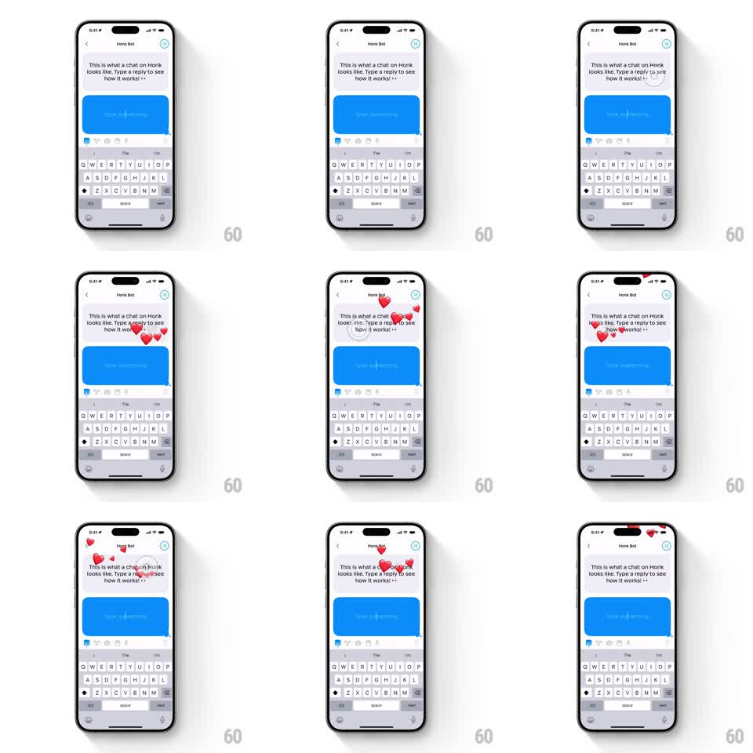

Media
Frame-by-frame

Rebuild this interaction 1:1: Honk's double-tap hearts - double-tapping the friend's chat bursts red heart emojis from the tap point that float up across the message area and get absorbed into the friend's avatar at the top-right.

Rebuild this interaction 1:1: Honk's double-tap hearts - double-tapping the friend's chat bursts red heart emojis from the tap point that float up across the message area and get absorbed into the friend's avatar at the top-right.
## Integration
Integration: stack-agnostic spec - springs given as stiffness/damping, timed motions as duration + curve; map every value to your framework and animation library of choice.
## Scene
Honk Bot chat ("This is what a chat on Honk looks like. Type a reply to see how it works!"), blue live bubble, keyboard open. The friend's avatar sits top-right. On double-tap, a stream of red hearts rises through the message area toward the avatar.
## Motion spec
Pattern: heart burst with avatar absorption.
- Double-tap: 5-8 red hearts spawn at the tap point (scale 0 -> 1, staggered 60ms apart), each popping with a tiny overshoot (scale 1 -> 1.15 -> 1).
- Hearts float upward along slight S-curves (translateY -180 to -320pt over 900-1200ms, horizontal sway +-20pt at ~1.5Hz), rotating gently (+-20deg), growing slightly then shrinking (scale peak 1.1 at 40%).
- As each heart reaches the avatar's vicinity it homes in (accelerates toward the avatar center, 150ms) and shrinks into it (scale -> 0); the avatar absorbs with a pulse (scale 1 -> 1.15 -> 1, 180ms) per heart.
- Repeated double-taps stack streams; earlier hearts continue independently.
## Calibration
- Hearts are red and filled; size 16-24pt with random variation.
- The absorption target is the avatar's center - hearts should converge, not just fade near it.
## Reduced motion
A single heart pops over the tap point and fades (400ms); avatar pulses once.
## Don't miss
- Hearts spawn at the exact tap location, not at the bubble or avatar.
- The keyboard and bubble stay fully interactive underneath - the hearts overlay everything.